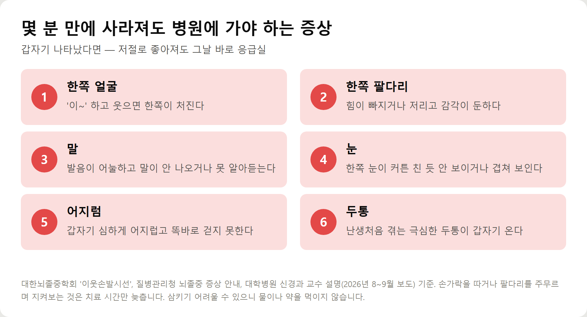
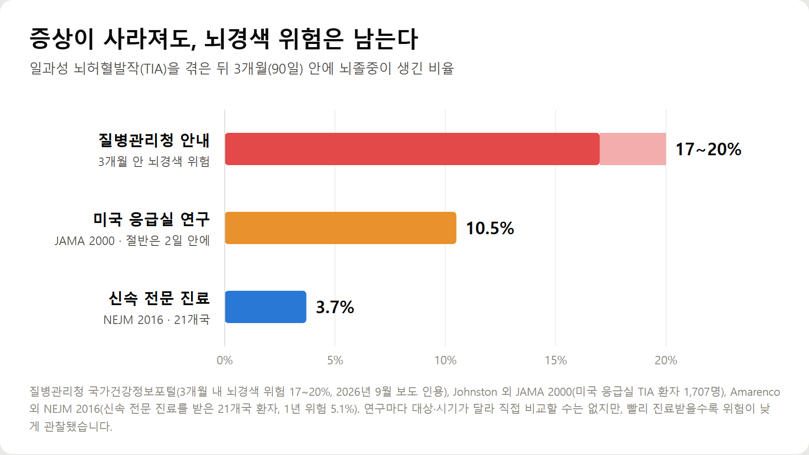
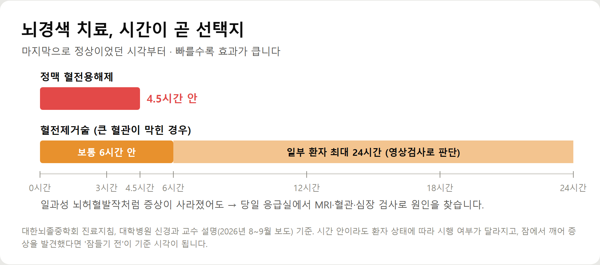
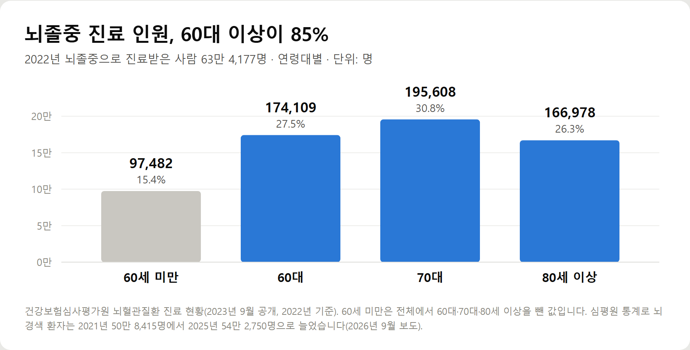

<meta charset="utf-8">
<title>뇌졸중 전조증상, 일과성 뇌허혈발작 — 나의 투자 그리고 행복한 여행</title>
<meta name="description" content="뇌졸중 전조증상인 일과성 뇌허혈발작(미니 뇌졸중)의 증상 6가지, 3개월 내 뇌경색 위험, 병원 검사와 치료, 혈전용해 4.5시간·혈전제거술 24시간, 예방법을 정리했습니다.">
<meta name="viewport" content="width=device-width, initial-scale=1">
<link rel="canonical" href="https://worldtraveler1.tistory.com/62">
<link rel="preconnect" href="https://fonts.googleapis.com">
<link rel="preconnect" href="https://fonts.gstatic.com" crossorigin>
<link rel="stylesheet" href="https://fonts.googleapis.com/css2?family=Hahmlet:wght@400;600;800&family=IBM+Plex+Mono:wght@400;500&family=IBM+Plex+Sans+KR:wght@300;400;500;600&display=swap">

<style>
  :root{
    --paper:#F2EEE6;--surface:#FAF8F3;--surface-2:#E7E1D5;
    --ink:#191510;--ink-2:#4A4235;--ink-3:#7D7364;
    --line:#D6CEBF;--line-soft:#E4DDD0;--accent:#B06A15;--accent-bright:#C2761A;
    --up:#E5484D;--down:#3B82F6;
    --f-display:"Hahmlet",'Nanum Myeongjo',"Apple SD Gothic Neo",serif;
    --f-body:"IBM Plex Sans KR","Apple SD Gothic Neo","Malgun Gothic",sans-serif;
    --f-mono:"IBM Plex Mono","SFMono-Regular",Consolas,monospace;
    --pad:clamp(20px,5vw,64px);
  }
  @media (prefers-color-scheme:dark){
    :root:not([data-theme="light"]){
      --paper:#0B1120;--surface:#121A2C;--surface-2:#1A2439;
      --ink:#E9EEF7;--ink-2:#A9B5C9;--ink-3:#72809A;
      --line:#26314A;--line-soft:#1D2739;--accent:#E8A33D;--accent-bright:#F0B45C;
    }
  }
  *{box-sizing:border-box;}
  body{margin:0;background:var(--paper);color:var(--ink);font-family:var(--f-body);
    font-weight:300;font-size:1rem;line-height:1.75;-webkit-font-smoothing:antialiased;}
  a{color:inherit;}
  img{max-width:100%;height:auto;}
  .wrap{max-width:760px;margin:0 auto;padding-inline:var(--pad);}
  .nav{position:sticky;top:0;z-index:20;background:color-mix(in srgb,var(--paper) 88%,transparent);
    backdrop-filter:saturate(180%) blur(12px);border-bottom:1px solid var(--line);}
  .nav-in{display:flex;align-items:center;justify-content:space-between;height:58px;}
  .brand{font-family:var(--f-display);font-weight:600;font-size:1rem;letter-spacing:-.02em;text-decoration:none;}
  .back{font-family:var(--f-mono);font-size:.72rem;color:var(--ink-3);text-decoration:none;}
  .article{padding-block:clamp(40px,7vw,72px) clamp(56px,9vw,96px);}
  .eyebrow{font-family:var(--f-mono);font-size:.68rem;letter-spacing:.16em;text-transform:uppercase;
    color:var(--accent);margin:0 0 14px;}
  h1{font-family:var(--f-display);font-weight:800;font-size:clamp(1.6rem,4.4vw,2.3rem);
    line-height:1.3;letter-spacing:-.03em;margin:0 0 16px;}
  .byline{font-family:var(--f-mono);font-size:.72rem;color:var(--ink-3);
    padding-bottom:24px;border-bottom:1px solid var(--line);margin-bottom:32px;}
  h2{font-family:var(--f-display);font-weight:600;font-size:1.25rem;letter-spacing:-.02em;margin:42px 0 14px;}
  h3{font-family:var(--f-display);font-weight:600;font-size:1.05rem;letter-spacing:-.02em;
    margin:30px 0 10px;padding-top:14px;border-top:1px solid var(--line-soft);}
  h3 .code{font-family:var(--f-mono);font-size:.7rem;font-weight:400;color:var(--ink-3);margin-left:6px;}
  p{margin:0 0 18px;color:var(--ink-2);}
  ul.checks{margin:0 0 18px;padding-left:20px;color:var(--ink-2);}
  ul.checks li{margin-bottom:8px;font-size:.94rem;}
  table{width:100%;border-collapse:collapse;font-size:.88rem;margin-bottom:8px;}
  th{font-family:var(--f-mono);font-size:.66rem;letter-spacing:.06em;text-transform:uppercase;
    color:var(--ink-3);text-align:right;padding:8px 6px;border-bottom:1px solid var(--line);}
  th:first-child{text-align:left;}
  td{padding:10px 6px;border-bottom:1px solid var(--line-soft);color:var(--ink-2);}
  td.num{font-family:var(--f-mono);text-align:right;font-variant-numeric:tabular-nums;}
  td.up{color:var(--up);} td.down{color:var(--down);}
  .scroll{overflow-x:auto;}
  figure{margin:22px 0;}
  figure img{display:block;border-radius:3px;background:var(--surface-2);}
  figcaption{margin-top:8px;font-family:var(--f-mono);font-size:.68rem;color:var(--ink-3);text-align:center;}
  .note{margin-top:34px;padding:16px 18px;border-left:3px solid var(--accent);
    background:var(--surface);border-radius:0 3px 3px 0;}
  .note p{margin:0;font-size:.85rem;color:var(--ink-3);}
  .foot{border-top:1px solid var(--line);background:var(--surface);padding-block:30px 38px;}
  .foot p{margin:0;font-size:.8rem;color:var(--ink-3);}
</style>

<nav class="nav">
  <div class="wrap nav-in">
    <a class="brand" href="../index.html">나의 투자 그리고 행복한 여행</a>
    <a class="back" href="../index.html#stocks">← 시황으로</a>
  </div>
</nav>

<main class="wrap article">
  <p class="eyebrow">Market</p>
  <h1>일과성 뇌허혈발작(TIA) 정리 — 증상, 90일 뇌졸중 위험, 치료 시간창과 예방 (2026)</h1>
  <p class="byline">건강 · 2026-09-14 기준</p>

  <p>한 줄 요약: 뇌졸중 증상이 잠시 나타났다 사라지면 일과성 뇌허혈발작일 수 있고, 3개월 안 뇌경색 위험이 17~20%(질병관리청)입니다. 증상이 사라져도 당일 응급실에서 원인을 찾아야 하며, 신속 진료를 받은 환자의 90일 뇌졸중 위험은 3.7%로 관찰됐습니다(NEJM 2016).</p>
  <p>2026년 9월 뇌졸중 관련 보도와 질병관리청·대한뇌졸중학회 자료, 임상 연구를 바탕으로 정리한 기록입니다.</p>
  <h2>핵심만 먼저</h2>
  <ul class="checks">
    <li>일과성 뇌허혈발작 — 뇌혈관이 잠깐 막혀 뇌졸중 증상이 나타났다가 저절로 사라지는 것. 미니 뇌졸중이라고도 부릅니다</li>
    <li>위험 — 3개월 안 뇌경색 위험 17~20%(질병관리청), 처음 며칠이 가장 위험합니다</li>
    <li>할 일 — 증상이 사라져도 그날 바로 응급실. 검사로 원인을 찾아 치료하면 위험이 크게 줄어듭니다</li>
    <li>지금 증상이 있다면 — 119. 뇌경색 혈관을 뚫는 약은 4.5시간, 혈전제거술은 일부 환자에서 최대 24시간 안에 판단합니다</li>
    <li>예방 — 혈압·혈당·콜레스테롤 관리, 금연, 심방세동 치료가 핵심입니다</li>
  </ul>
  <h2>1. 일과성 뇌허혈발작이란</h2>
  <p>뇌로 가는 혈관이 핏덩이(혈전) 등으로 잠깐 막히면 그 혈관이 담당하는 뇌 부위에 피가 부족해져 뇌졸중과 똑같은 증상이 나타납니다. 그러다 혈류가 다시 돌면 증상이 사라집니다. 이것이 일과성 뇌허혈발작입니다.</p>
  <p>대부분 몇 분에서 수십 분 안에 좋아지고, 뇌 영상에 손상이 남지 않습니다. 그래서 '괜찮아졌다'며 병원에 가지 않는 경우가 많습니다. 하지만 혈관을 막았던 원인은 그대로 남아 있습니다.</p>
  <p>강동경희대병원 이일형 교수는 "몸 상태가 평소와 다르거나 주변에서 이상하다는 말을 들었다면, 증상이 잠시 좋아졌더라도 지체하지 말고 응급실을 찾아 정확한 상태를 확인해야 한다"고 말합니다.</p>
  <h2>2. 이런 증상이 잠깐이라도 있었다면</h2>
  <figure><figcaption>몇 분 만에 사라져도 병원에 가야 하는 뇌졸중 전조증상 6가지</figcaption></figure>
  <ul class="checks">
    <li>한쪽 얼굴 — '이~' 하고 웃으면 한쪽 입꼬리가 처진다</li>
    <li>한쪽 팔다리 — 힘이 빠지거나 저리고, 물건을 떨어뜨린다</li>
    <li>말 — 발음이 어눌하거나 단어가 안 나오고, 남의 말을 이해하지 못한다</li>
    <li>눈 — 한쪽 눈이 커튼을 친 듯 가려지거나, 물체가 두 개로 보인다</li>
    <li>어지럼 — 갑자기 심하게 어지럽고 한쪽으로 쏠려 똑바로 걷지 못한다</li>
    <li>두통 — 난생처음 겪는 극심한 두통이 갑자기 온다</li>
  </ul>
  <p>핵심은 '갑자기'와 '한쪽'입니다. 대한뇌졸중학회는 '이웃손발시선' — 이~ 하고 웃기, 두 손 앞으로 뻗기, 발음해 보기, 시선 확인 — 으로 기억하라고 권합니다.</p>
  <p>가족이 먼저 알아채는 경우가 많습니다. 본인은 증상을 잘 모르거나 대수롭지 않게 여기기 때문입니다. 부모님이 "잠깐 그랬는데 괜찮다"고 하시면 그 말을 흘려듣지 않는 것이 중요합니다.</p>
  <h2>3. 증상이 사라져도 위험한 이유</h2>
  <figure><figcaption>일과성 뇌허혈발작 후 90일 안 뇌졸중 발생 비율 (질병관리청·JAMA 2000·NEJM 2016)</figcaption></figure>
  <p>질병관리청 국가건강정보포털은 일과성 뇌허혈발작 후 3개월 안에 뇌경색이 생길 위험을 17~20%로 설명합니다. 발생 초기 며칠이 가장 위험합니다.</p>
  <p>해외 연구도 같은 경고를 보여줍니다. 2000년 미국 응급실 환자 1,707명을 추적한 연구(JAMA)에서는 90일 안에 10.5%가 뇌졸중을 겪었고, 그 절반이 첫 2일 안에 발생했습니다.</p>
  <p>반대로 빨리 진료받으면 위험이 크게 낮았습니다. 증상 뒤 신속하게 전문 진료를 받은 21개국 환자를 추적한 2016년 연구(NEJM)에서는 90일 뇌졸중 발생률이 3.7%, 1년 5.1%였습니다. 연구마다 대상과 시기가 달라 직접 비교할 수는 없지만, '빨리 가서 원인을 찾으면 줄일 수 있는 위험'이라는 점은 분명합니다.</p>
  <h2>4. 병원에서는 무엇을 하나</h2>
  <p>일과성 뇌허혈발작이 의심되면 응급실이나 신경과에서 원인을 찾는 검사를 합니다.</p>
  <ul class="checks">
    <li>뇌 영상 — CT로 출혈을 확인하고, MRI로 작은 뇌경색이 숨어 있는지 봅니다</li>
    <li>혈관 검사 — CT·MR 혈관촬영이나 경동맥 초음파로 목과 뇌혈관이 좁아졌는지 확인합니다</li>
    <li>심장 검사 — 심전도 등으로 핏덩이를 만드는 부정맥(심방세동)이 있는지 봅니다</li>
    <li>혈액 검사 — 혈당, 콜레스테롤 등 위험 요인을 확인합니다</li>
  </ul>
  <p>원인에 따라 치료가 달라집니다. 혈소판이 뭉치지 않게 하는 항혈소판제, 심방세동이 있으면 항응고제, 경동맥이 심하게 좁아졌으면 시술이나 수술을 검토합니다. 어떤 약을 쓸지는 검사 결과를 보고 의료진이 정합니다.</p>
  <h2>5. 지금 증상이 있다면 — 시간이 곧 치료</h2>
  <figure><figcaption>뇌경색 치료 시간창 — 혈전용해제 4.5시간, 혈전제거술 최대 24시간</figcaption></figure>
  <p>증상이 계속되고 있다면 뇌졸중일 수 있습니다. 바로 119를 부릅니다. 대한뇌졸중학회는 119를 이용한 환자일수록 병원 도착이 빠르고 혈전용해 치료를 받을 가능성이 높다고 설명합니다.</p>
  <ul class="checks">
    <li>정맥 혈전용해제 — 막힌 혈관을 녹이는 약. 증상 시작 후 4.5시간 안에 투여를 판단합니다</li>
    <li>혈전제거술 — 큰 혈관이 막혔을 때 관을 넣어 핏덩이를 빼내는 시술. 보통 6시간 안, 일부 환자는 영상검사로 판단해 최대 24시간까지 가능합니다</li>
    <li>기준 시각 — '마지막으로 정상이었던 시각'입니다. 자다 깨서 증상을 발견했다면 잠들기 전이 기준이 됩니다</li>
    <li>하지 말 것 — 손가락 따기, 팔다리 주무르기, 물이나 약 먹이기. 삼키기 어려워 사레가 들 수 있습니다</li>
  </ul>
  <p>시간 안에 도착해도 환자 상태에 따라 치료 여부가 달라집니다. 그래서 '시간이 지났으니 소용없다'고 판단해 집에 있을 이유도, '아직 시간 있다'며 미룰 이유도 없습니다. 빠를수록 선택지가 넓어집니다.</p>
  <h2>6. 누가 조심해야 하나 — 예방이 가장 큰 치료</h2>
  <figure><figcaption>2022년 뇌졸중 연령대별 진료인원 (건강보험심사평가원)</figcaption></figure>
  <p>건강보험심사평가원에 따르면 2022년 뇌졸중으로 진료받은 사람은 63만 4,177명이고, 이 가운데 60대 이상이 85%였습니다. 뇌경색 환자는 2021년 50만 8,415명에서 2025년 54만 2,750명으로 늘었습니다.</p>
  <p>대한뇌졸중학회가 꼽는 주요 위험 요인은 고혈압, 당뇨병, 흡연, 이상지질혈증, 심장질환(특히 심방세동), 비만입니다. 뇌졸중은 한번 생기면 손상된 뇌를 완전히 되돌리기 어려워, 이 위험 요인을 관리하는 것이 가장 확실한 예방입니다.</p>
  <ul class="checks">
    <li>혈압 — 가장 중요한 위험 요인입니다. 집에서 재고, 약은 임의로 끊지 않습니다</li>
    <li>혈당·콜레스테롤 — 당뇨병과 이상지질혈증은 치료 목표를 의사와 정해 관리합니다</li>
    <li>금연·절주 — 흡연은 혈관을 좁히고 핏덩이를 잘 생기게 합니다</li>
    <li>심방세동 — 가슴이 불규칙하게 두근거리면 심전도 검사를 받아 봅니다</li>
    <li>생활 — 갑작스러운 온도 변화와 무리한 운동을 피하고, 물을 충분히 마십니다</li>
  </ul>
  <h2>비용·조건 한눈에 보기</h2>
  <ul class="checks">
    <li>응급실 — 뇌졸중 의심 증상은 응급 상황입니다. 119를 이용하면 치료 가능한 병원으로 빨리 갈 수 있습니다</li>
    <li>건강보험 — 뇌졸중 검사와 치료는 대부분 건강보험 급여 대상입니다</li>
    <li>산정특례 — 뇌경색·뇌출혈로 수술을 받거나 혈전용해제 등을 투여받으면 입원 최대 30일간 본인부담이 5%로 줄어듭니다 (비급여는 제외)</li>
    <li>외래 본인부담 — 일반 기준 의원 30%, 병원 40%, 종합병원 50%, 상급종합병원 60%</li>
    <li>재활 — 급성기 치료 뒤 48~72시간 무렵부터 재활을 시작하는 것이 국내 진료지침의 기준입니다</li>
  </ul>
  <h2>주의할 점</h2>
  <ul class="checks">
    <li>증상이 사라졌다고 다음 날 외래로 미루지 않습니다 — 처음 며칠이 가장 위험합니다</li>
    <li>혼자 운전해서 가지 않습니다 — 운전 중 증상이 다시 올 수 있습니다</li>
    <li>먹는 약 목록을 챙깁니다 — 특히 혈액을 묽게 하는 약은 치료 결정에 중요합니다</li>
    <li>증상이 시작된 시각을 적어 둡니다 — 치료 방법을 정하는 기준이 됩니다</li>
    <li>한 번 괜찮았다고 다음에도 괜찮은 게 아닙니다 — 같은 증상이 반복되면 더 위험한 신호입니다</li>
  </ul>
  <h2>자주 묻는 질문</h2>
  <p>Q. 증상이 5분 만에 없어졌는데도 응급실에 가야 하나요?</p>
  <p>네. 증상이 짧았어도 뇌경색 위험은 남아 있고, 처음 며칠이 가장 위험합니다. 그날 바로 응급실에서 원인을 확인하는 것이 권고됩니다.</p>
  <p>Q. 일과성 뇌허혈발작과 뇌경색은 어떻게 다른가요?</p>
  <p>증상은 같지만 일과성 뇌허혈발작은 혈류가 다시 돌면서 증상이 사라지고 뇌 손상이 남지 않는 경우입니다. 뇌경색은 혈관이 계속 막혀 뇌 조직이 손상된 상태입니다.</p>
  <p>Q. 40·50대도 생기나요?</p>
  <p>생길 수 있습니다. 진료 인원은 60대 이상이 대부분이지만, 2022년에도 60세 미만 환자가 약 9만 7천 명이었습니다. 고혈압·당뇨병·흡연이 있다면 나이와 관계없이 조심해야 합니다.</p>
  <p>Q. 병원에 가면 입원해야 하나요?</p>
  <p>검사 결과와 위험도에 따라 다릅니다. 원인이 뚜렷하거나 위험이 높으면 입원해 검사와 치료를 이어가고, 그렇지 않으면 약을 처방받고 외래로 추적하기도 합니다.</p>
  <p>Q. 부모님이 병원을 한사코 거부하시면요?</p>
  <p>증상이 다시 나타나거나 계속되면 망설이지 말고 119를 부르세요. 증상이 이미 사라졌다면 '검사만 해 보자'고 설득하고, 증상이 있었던 시각과 모습을 기록해 의료진에게 전달하면 도움이 됩니다.</p>
  <h2>정리하면</h2>
  <p>한쪽 팔다리 힘 빠짐, 말 어눌함, 한쪽 눈 가림, 심한 어지럼이 갑자기 왔다가 사라졌다면 일과성 뇌허혈발작일 수 있습니다. 3개월 안 뇌경색 위험이 17~20%에 이르고, 처음 며칠이 가장 위험합니다.</p>
  <p>증상이 사라졌어도 그날 응급실에서 원인을 찾는 것, 증상이 계속되면 즉시 119를 부르는 것. 이 두 가지만 기억해도 큰 뇌졸중을 막을 기회가 생깁니다.</p>
  <p>그리고 가장 좋은 치료는 예방입니다. 혈압과 혈당, 콜레스테롤을 관리하고 담배를 끊는 것이 뇌혈관을 지키는 가장 확실한 방법입니다.</p>
  <p>다음 글에서는 뇌경색의 숨은 원인인 심방세동과, 경동맥 초음파 검사가 필요한 사람을 정리하겠습니다.</p>
  <p><b>함께 보면 좋은 글</b> — <a href="https://danielmoon82.github.io/moon/posts/facialpalsy-2026-09-14.html">입에서 물이 샌다면? 구안와사와 뇌졸중 구별법</a></p>
  <div class="note"><p>이 글은 공공기관 자료와 연구, 언론 보도를 바탕으로 한 일반 건강 정보이며 진단이나 치료를 대신하지 않습니다. 뇌졸중이 의심되는 증상이 있으면 즉시 119에 연락하고, 증상이 사라졌더라도 의료기관에서 진료를 받으세요.</p></div>
  <p>※ 기준 시점: TIA 후 뇌경색 위험은 질병관리청 국가건강정보포털(2026년 9월 보도 인용), 뇌졸중 연령별 진료인원은 건강보험심사평가원 2022년 기준(2023년 9월 공개), 뇌경색·뇌출혈 환자 수는 2021~2025년 심평원 통계(2026년 9월 보도), 사망원인은 2024년 사망원인통계, 해외 연구는 JAMA 2000·NEJM 2016, 치료 시간과 증상 확인법은 대한뇌졸중학회 기준입니다.</p>
</main>

<footer class="foot">
  <div class="wrap"><p>나의 투자 그리고 행복한 여행 · 투자 판단의 참고 자료일 뿐, 매수·매도를 권유하지 않습니다.</p></div>
</footer>
